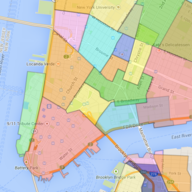

Exploring the neighborhoods of New York City
Neighborhood data was adapted from nyc.gov,
OpenStreetMap,
Wikipedia,
Google Maps, and contributors like you.
All neighborhood boundaries are subject to debate.
The neighborhood summaries were crafted from careful research. Some information may be out of date.
To report errors, please contact the maintainer.